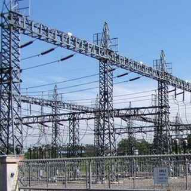
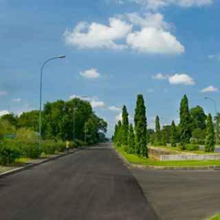
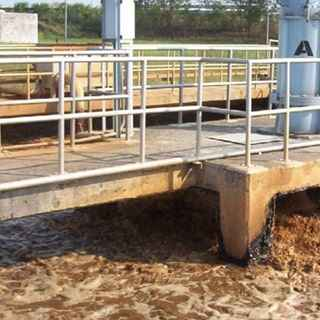
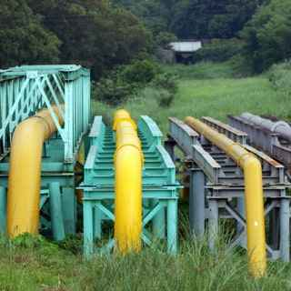
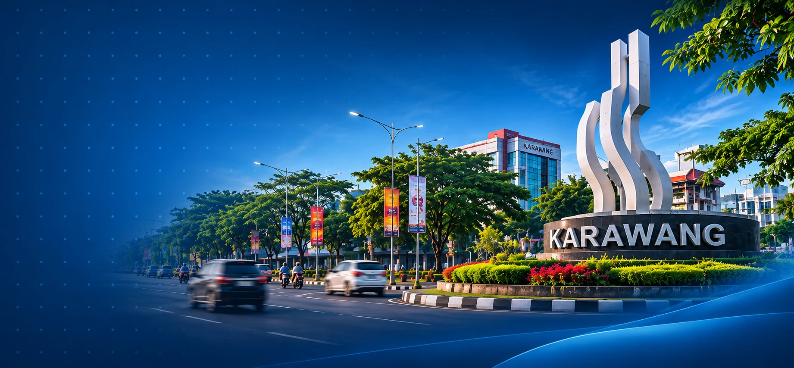
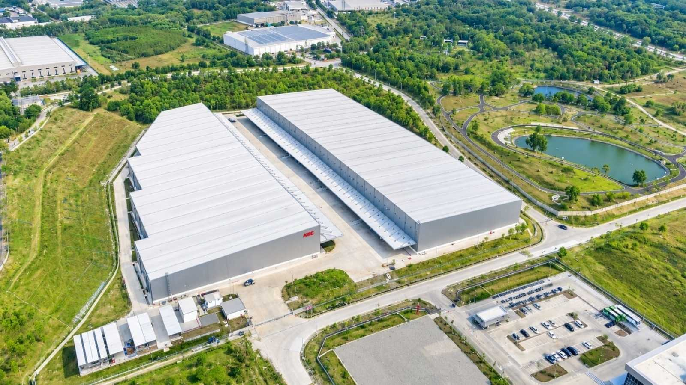
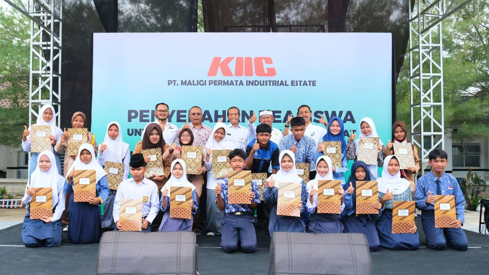
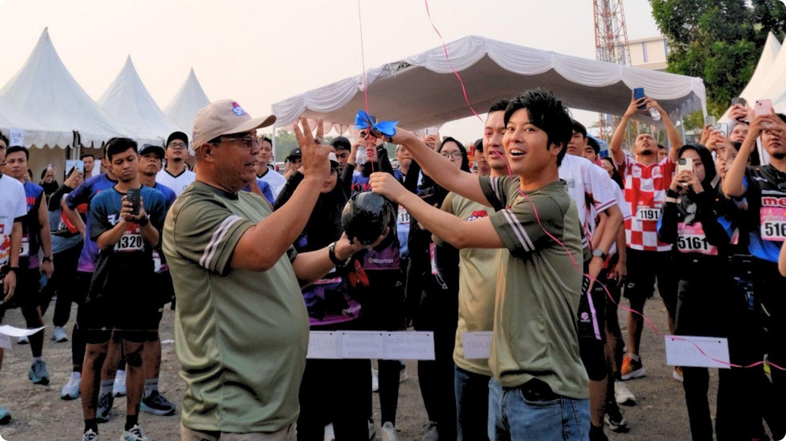

{{t.num}} · {{t.tag}}
{{t.title}}
{{t.desc}}
- {{t.f1k}}
- {{t.f1v}}
- {{t.f2k}}
- {{t.f2v}}
Pride of KIIC
Infrastruktur, akses, dan lingkungan untuk operasional jangka panjang.
Properti
Gudang, unit komersial, dan area ekspansi di dalam kawasan.
Belum yakin properti mana yang cocok?
Tim penjualan membantu mencocokkan kebutuhan luas, waktu, dan jenis industri Anda.
Ajukan kunjungan lokasiPencarian populer
{{resultCount}} halaman cocok
Tidak ada halaman untuk “{{query}}”
Coba kata lain, atau tanyakan langsung ke tim penjualan lewat WhatsApp.
Tentang KIIC
Kebanggaan KIIC, menjangkau tiap sudut.
KIIC adalah Kawasan Industri seluas ±1.500 ha yang beroperasi sejak 1993. Misi kami adalah menyediakan lingkungan kerja yang nyaman bagi para penyewa (tenant) agar dapat fokus pada aktivitas mereka.
{{mapStep}} / 3
{{mapText}}
Properti KIIC
Mulai dari gudang siap pakai, unit pabrik dan kantor, hingga lahan di area ekspansi. Semua dikelola satu tim, di satu kawasan yang beroperasi sejak 1993.
Pilih panel untuk melihat detail
{{t.num}} · {{t.tag}}
{{t.desc}}
Infrastruktur & Utilitas
Infrastruktur dasar untuk memulai produksi di Indonesia sudah tersedia di kawasan: listrik, ruas jalan, air industri, gas alam, serta telekomunikasi dan internet.

Dua kabel tegangan tinggi 500 kV milik PLN saling mencadangkan. KIIC adalah kawasan industri pertama di Indonesia dengan kontrak pasokan prioritas dari PLN.
2 jalur 500 kV, pasokan prioritas
Sistem drainase air hujan dikaji setiap tahun. Lebih dari 30 tahun sejak Fase 1, tidak ada kerusakan berarti akibat banjir.
Bebas kerusakan banjir sejak Fase 1
Kilang air industri dan air limbah dirancang dan dibangun perusahaan Jepang, didukung dua waduk untuk pasokan cadangan dan darurat.
2 waduk cadangan
Saluran pipa gas alam PGN sudah tertanam di dalam kawasan industri KIIC.
Jaringan pipa PGNLima perusahaan telekomunikasi menanam kabel serat optik berkualitas tinggi untuk internet berkecepatan tinggi yang stabil.
5 penyedia serat optikLingkungan sekitar
KIIC berada di Kabupaten Karawang, Jawa Barat. Sebagian besar pekerja tinggal di pusat Karawang, sekitar 5 km dari kawasan, dengan rumah sakit, perumahan, bank, dan hotel yang terus berkembang.
Penduduk Kabupaten Karawang
2,4juta

Dari KIIC ke pusat Karawang
15menit
Beberapa rumah sakit, termasuk RSUD, di pusat Karawang.
Beberapa area perumahan untuk pekerja di sekitar kawasan.
Kantor cabang bank di area Karawang.
Fasilitas komersial besar di Karawang Tengah untuk tamu bisnis dan karyawan.
Testimoni tenant
Dengar langsung dari tenant yang menjalankan pabriknya di kawasan kami.
{{testiQuote}}
{{testiName}}
Tenant KIIC
Berita & kegiatan

PropertiKIIC resmi menyerahterimakan Warehouse 4 sebagai bagian dari pengembangan fasilitas pendukung industri dan logistik di kawasan.

KomunitasKIIC menyalurkan beasiswa Rp299,4 juta untuk 280 pelajar Karawang lewat CSR pilar pendidikan.

KomunitasAjang olahraga tahunan yang diikuti 100 perusahaan tenant untuk mempererat kebersamaan dan sportivitas.
Kunjungan lokasi
Tim penjualan akan mengatur kunjungan lokasi sesuai kebutuhan lahan, gudang, atau unit komersial Anda.
Atau hubungi tim Sales & Marketing
Telepon+62 811 1340 7225 WhatsApp+62 811 1340 7225 Emailsales@kiic.co.id